3 Sampling the Imaginary
If you would like to know the probability someone is a vampire given they test positive to the blood-based vampire test, you compute
\[\text{Pr(vampire|positive)} = \frac{\text{Pr(positive|vampire) Pr(vampire)}}{\text{Pr(positive)}}\]
We’ll do so within a tibble.
library(tidyverse)
tibble(pr_positive_vampire = .95,
pr_positive_mortal = .01,
pr_vampire = .001) %>%
mutate(pr_positive = pr_positive_vampire * pr_vampire + pr_positive_mortal * (1 - pr_vampire)) %>%
mutate(pr_vampire_positive = pr_positive_vampire * pr_vampire / pr_positive) %>%
glimpse()## Observations: 1
## Variables: 5
## $ pr_positive_vampire <dbl> 0.95
## $ pr_positive_mortal <dbl> 0.01
## $ pr_vampire <dbl> 0.001
## $ pr_positive <dbl> 0.01094
## $ pr_vampire_positive <dbl> 0.08683729Here’s the other way of tackling the vampire problem, this time useing the frequency format.
tibble(pr_vampire = 100 / 100000,
pr_positive_vampire = 95 / 100,
pr_positive_mortal = 99 / 99900) %>%
mutate(pr_positive = 95 + 999) %>%
mutate(pr_vampire_positive = pr_positive_vampire * 100 / pr_positive) %>%
glimpse()## Observations: 1
## Variables: 5
## $ pr_vampire <dbl> 0.001
## $ pr_positive_vampire <dbl> 0.95
## $ pr_positive_mortal <dbl> 0.000990991
## $ pr_positive <dbl> 1094
## $ pr_vampire_positive <dbl> 0.086837293.1 Sampling from a grid-like approximate posterior
# how many grid points would you like?
n <- 1000
n_success <- 6
n_tirals <- 9
(
d <-
tibble(p_grid = seq(from = 0, to = 1, length.out = n),
# note we're still using a flat uniform prior
prior = 1) %>%
mutate(likelihood = dbinom(n_success, size = n_tirals, prob = p_grid)) %>%
mutate(posterior = likelihood * prior) %>%
mutate(posterior = posterior / sum(posterior))
)## # A tibble: 1,000 x 4
## p_grid prior likelihood posterior
## <dbl> <dbl> <dbl> <dbl>
## 1 0 1 0. 0.
## 2 0.00100 1 8.43e-17 8.43e-19
## 3 0.00200 1 5.38e-15 5.38e-17
## 4 0.00300 1 6.11e-14 6.11e-16
## 5 0.00400 1 3.42e-13 3.42e-15
## 6 0.00501 1 1.30e-12 1.30e-14
## 7 0.00601 1 3.87e-12 3.88e-14
## 8 0.00701 1 9.73e-12 9.74e-14
## 9 0.00801 1 2.16e-11 2.16e-13
## 10 0.00901 1 4.37e-11 4.38e-13
## # ... with 990 more rowssamples <- sample(d$p_grid, prob = d$posterior, size = 1e4, replace = T)
glimpse(samples)## num [1:10000] 0.799 0.652 0.63 0.681 0.814 ...We’ll plot the zigzagging left panel of Figure 3.1 with geom_line(). But before we do, we’ll need to add a variable numbering the samples. And even before that, perhaps you noticed that glimpse(samples) told us samples is a numeric vector. Since ggplot2 requires we use data frames, of which tibbles are special case, we’ll use as_tibble() to convert samples to a tibble.
samples <-
samples %>%
as_tibble() %>%
mutate(sample_number = 1:n())
head(samples)## # A tibble: 6 x 2
## value sample_number
## <dbl> <int>
## 1 0.799 1
## 2 0.652 2
## 3 0.630 3
## 4 0.681 4
## 5 0.814 5
## 6 0.323 6But notice what happened. When we simply converted the samples vector with as_tibble(), that vector was renamed quite generically as value. One way around this is with rename() (i.e., rename(samples = value)). But this is already becoming cumbersome. Here’s a more compact way.
samples <-
tibble(samples = sample(d$p_grid, prob = d$posterior, size = 1e4, replace = T)) %>%
mutate(sample_number = 1:n())
glimpse(samples)## Observations: 10,000
## Variables: 2
## $ samples <dbl> 0.8528529, 0.5975976, 0.6866867, 0.5795796, 0.4494494, 0.8118118, 0.66166...
## $ sample_number <int> 1, 2, 3, 4, 5, 6, 7, 8, 9, 10, 11, 12, 13, 14, 15, 16, 17, 18, 19, 20, 21...This time we just made samples a vector within a tibble from the start. Anyway, here’s the right panel for Figure 3.1.
samples %>%
ggplot(aes(x = sample_number, y = samples)) +
geom_line(size = 1/10) +
labs(x = "sample number",
y = "proportion of water (p)")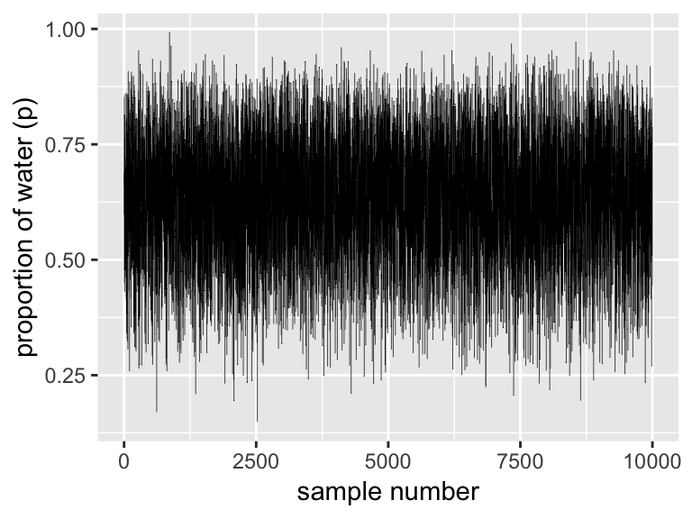
We’ll make the density in the right panel with geom_density().
samples %>%
ggplot(aes(x = samples)) +
geom_density(fill = "black") +
coord_cartesian(xlim = 0:1) +
xlab("proportion of water (p)")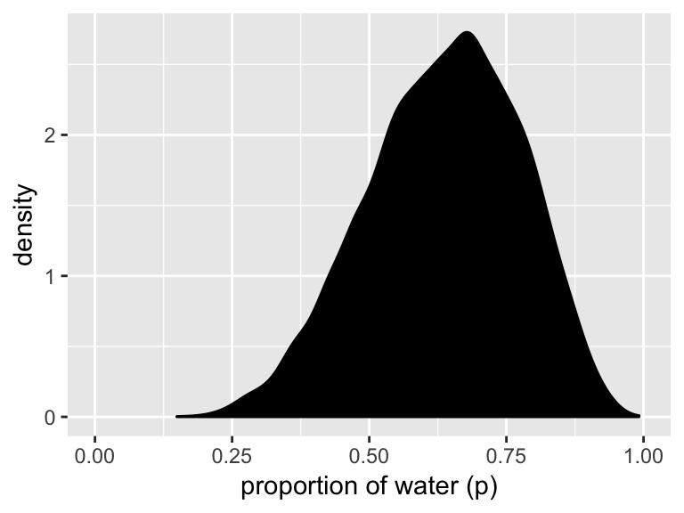
3.2 Sampling to summarize
To get the proportion of water less than some value of p_grid within the tidyverse, you’d first filter() by that value and then take the sum() within summarise().
d %>%
filter(p_grid < .5) %>%
summarise(sum = sum(posterior))## # A tibble: 1 x 1
## sum
## <dbl>
## 1 0.172To learn more about dplyr::summarise() and related functions, check out Baert’s Data Wrangling Part 4: Summarizing and slicing your data and Chapter 5.6 of R4DS.
If what you want is a frequency based on filtering by samples, then you might use n() within summarise().
samples %>%
filter(samples < .5) %>%
summarise(sum = n() / 1e4)## # A tibble: 1 x 1
## sum
## <dbl>
## 1 0.174You can use & within filter(), too.
samples %>%
filter(samples > .5 & samples < .75) %>%
summarise(sum = n() / 1e4)## # A tibble: 1 x 1
## sum
## <dbl>
## 1 0.5983.2.1 Intervals of defined mass.
We’ll create the upper two panels for Figure 3.2 with geom_line(), geom_ribbon(), and a some careful filtering.
# upper left panel
d %>%
ggplot(aes(x = p_grid)) +
geom_line(aes(y = posterior)) +
geom_ribbon(data = d %>% filter(p_grid < .5),
aes(ymin = 0, ymax = posterior)) +
labs(x = "proportion of water (p)",
y = "density")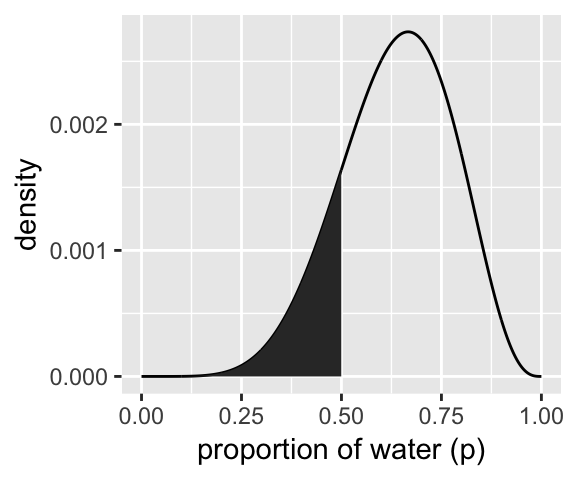
# upper right panel
d %>%
ggplot(aes(x = p_grid)) +
geom_line(aes(y = posterior)) +
# note this next line is the only difference in code from the last plot
geom_ribbon(data = d %>% filter(p_grid < .75 & p_grid > .5),
aes(ymin = 0, ymax = posterior)) +
labs(x = "proportion of water (p)",
y = "density")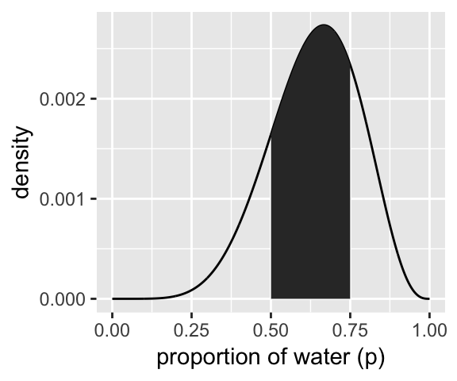
We’ll come back for the lower two panels in a bit.
Since we’ve saved our samples vector within the well-named samples tibble, we’ll have to index with $ within quantile.
(q_80 <- quantile(samples$samples, prob = .8))## 80%
## 0.7617618That value will come in handy for the lower left panel of Figure 3.2, so we saved it. But anyways, we could select() the samples vector, extract it from the tibble with pull(), and then pump it into quantile():
samples %>%
select(samples) %>%
pull() %>%
quantile(prob = .8)## 80%
## 0.7617618And we might also use quantile() within summarise().
samples %>%
summarise(`80th percentile` = quantile(samples, p = .8))## # A tibble: 1 x 1
## `80th percentile`
## <dbl>
## 1 0.762Here’s the summarise() approach with two probabilities:
samples %>%
summarise(`10th percentile` = quantile(samples, p = .1),
`90th percentile` = quantile(samples, p = .9))## # A tibble: 1 x 2
## `10th percentile` `90th percentile`
## <dbl> <dbl>
## 1 0.446 0.813The tydiverse approach is nice in that that family of functions typically returns a data frame. But sometimes you just want your values in a numeric vector for the sake of quick indexing. In that case, base R quantile() shines.
(q_10_and_90 <- quantile(samples$samples, prob = c(.1, .9)))## 10% 90%
## 0.4464464 0.8128128Now we have our cutoff values saved as q_80 and q_10_and_90, we’re ready to make the bottom panels of Figure 3.2.
# lower left panel
d %>%
ggplot(aes(x = p_grid)) +
geom_line(aes(y = posterior)) +
geom_ribbon(data = d %>% filter(p_grid < q_80),
aes(ymin = 0, ymax = posterior)) +
annotate(geom = "text",
x = .25, y = .0025,
label = "lower 80%") +
labs(x = "proportion of water (p)",
y = "density")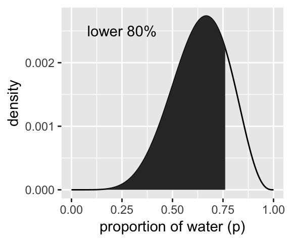
# lower right panel
d %>%
ggplot(aes(x = p_grid)) +
geom_line(aes(y = posterior)) +
geom_ribbon(data = d %>% filter(p_grid > q_10_and_90[1] & p_grid < q_10_and_90[2]),
aes(ymin = 0, ymax = posterior)) +
annotate(geom = "text",
x = .25, y = .0025,
label = "middle 80%") +
labs(x = "proportion of water (p)",
y = "density")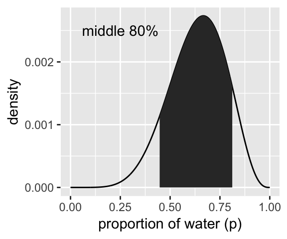
We’ve already defined p_grid and prior within d, above. Here we’ll reuse them and update the rest of the columns.
# here we update the `dbinom()` parameters
n_success <- 3
n_tirals <- 3
# update d
d <-
d %>%
mutate(likelihood = dbinom(n_success, size = n_tirals, prob = p_grid)) %>%
mutate(posterior = likelihood * prior) %>%
mutate(posterior = posterior / sum(posterior))
# here's our new samples tibble
(
samples <- tibble(samples = sample(d$p_grid, prob = d$posterior, size = 1e4, replace = T))
)## # A tibble: 10,000 x 1
## samples
## <dbl>
## 1 0.532
## 2 0.680
## 3 0.818
## 4 0.947
## 5 0.950
## 6 0.894
## 7 0.558
## 8 0.713
## 9 0.807
## 10 0.813
## # ... with 9,990 more rowsThe rethinking::PI() function works like a nice shorthand for quantile().
quantile(samples$samples, prob = c(.25, .75))## 25% 75%
## 0.7047047 0.9299299rethinking::PI(samples$samples, prob = .5)## 25% 75%
## 0.7047047 0.9299299Now’s a good time to introduce Matthew Kay’s tidybayes package, which offers an array of convenience functions for Bayesian models of the type we’ll be working with in this project.
library(tidybayes)
median_qi(samples$samples, .width = .5)## y ymin ymax .width .point .interval
## 1 0.8398398 0.7047047 0.9299299 0.5 median qiThe tidybayes package offers a family of functions that make it easy to summarize a distribution with a measure of central tendency and intervals. With median_qi(), we asked for the median and quantile-based intervals–just like we’ve been doing with quantile(). Note how the .width argument within median_qi() worked the same way the prob argument did within rethinking::PI(). With .width = .5, we indicated we wanted a quantile-based 50% interval, which was returned in the ymin and ymax columns. The tidybayes framework makes it easy to request multiple types of intervals. E.g., here we’ll request 50%, 80%, and 99% intervals.
median_qi(samples$samples, .width = c(.5, .8, .99))## y ymin ymax .width .point .interval
## 1 0.8398398 0.7047047 0.9299299 0.50 median qi
## 2 0.8398398 0.5625626 0.9749750 0.80 median qi
## 3 0.8398398 0.2562563 0.9989990 0.99 median qiThe .width column in the output indexed which line presented which interval.
Now let’s use the rethinking::HPDI() function to return 50% highest posterior density intervals (HPDIs).
rethinking::HPDI(samples$samples, prob = .5)## |0.5 0.5|
## 0.8388388 0.9989990The reason I introduce tidybayes now is that the functions of the brms package only support percentile-based intervals of the type we computed with quantile() and median_qi(). But tidybayes also supports HPDIs.
mode_hdi(samples$samples, .width = .5)## y ymin ymax .width .point .interval
## 1 0.9567242 0.8388388 0.998999 0.5 mode hdiThis time we used the mode as the measure of central tendency. With this family of tidybayes functions, you specify the measure of central tendency in the prefix (i.e., mean, median, or mode) and then the type of interval you’d like (i.e., qi or hdi).
If you just want to extract a quick value out of, say, mode_hdi(), you could do so with brackets. E.g., here we pull the lower bound of the 50% HPDI.
median_qi(samples$samples, .width = .5)[, "ymin"]## [1] 0.7047047Now we have that skill, we can use it to make Figure 3.3.
# lower left panel
d %>%
ggplot(aes(x = p_grid)) +
geom_ribbon(data = d %>% filter(p_grid > median_qi(samples$samples, .width = .5)[, "ymin"] &
p_grid < median_qi(samples$samples, .width = .5)[, "ymax"]),
aes(ymin = 0, ymax = posterior),
fill = "grey75") +
geom_line(aes(y = posterior)) +
labs(subtitle = "50% Percentile Interval",
x = "proportion of water (p)",
y = "density")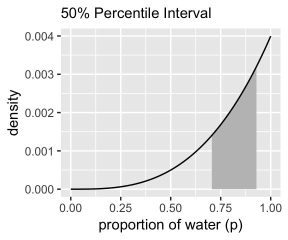
# lower right panel
d %>%
ggplot(aes(x = p_grid)) +
geom_ribbon(data = d %>% filter(p_grid > median_hdi(samples$samples, .width = .5)[, "ymin"] &
p_grid < median_hdi(samples$samples, .width = .5)[, "ymax"]),
aes(ymin = 0, ymax = posterior),
fill = "grey75") +
geom_line(aes(y = posterior)) +
labs(subtitle = "50% HPDI",
x = "proportion of water (p)",
y = "density")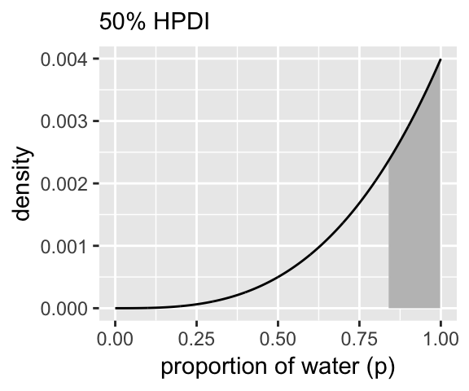
3.2.2 Point estimates.
We’ve been calling point estimates measures of central tendency. If we arrange() our d tibble in descending order by posterior, we’ll see the corresponding p_grid value for its MAP estimate.
d %>%
arrange(desc(posterior))## # A tibble: 1,000 x 4
## p_grid prior likelihood posterior
## <dbl> <dbl> <dbl> <dbl>
## 1 1 1 1 0.00400
## 2 0.999 1 0.997 0.00398
## 3 0.998 1 0.994 0.00397
## 4 0.997 1 0.991 0.00396
## 5 0.996 1 0.988 0.00395
## 6 0.995 1 0.985 0.00394
## 7 0.994 1 0.982 0.00392
## 8 0.993 1 0.979 0.00391
## 9 0.992 1 0.976 0.00390
## 10 0.991 1 0.973 0.00389
## # ... with 990 more rowsTo emphasize it, we can use slice() to select the top row.
d %>%
arrange(desc(posterior)) %>%
slice(1)## # A tibble: 1 x 4
## p_grid prior likelihood posterior
## <dbl> <dbl> <dbl> <dbl>
## 1 1 1 1 0.00400Here’s the rethinking::chainmode() method.
rethinking::chainmode(samples$samples, adj = 0.01)## [1] 0.9969658And you can also do whis with mode_hdi() or mode_qi().
samples %>% mode_hdi(samples)## # A tibble: 1 x 6
## samples .lower .upper .width .point .interval
## <dbl> <dbl> <dbl> <dbl> <chr> <chr>
## 1 0.957 0.474 1 0.95 mode hdisamples %>% mode_qi(samples)## # A tibble: 1 x 6
## samples .lower .upper .width .point .interval
## <dbl> <dbl> <dbl> <dbl> <chr> <chr>
## 1 0.957 0.401 0.994 0.95 mode qiBut medians and means are typical, too.
samples %>%
summarise(mean = mean(samples),
median = median(samples))## # A tibble: 1 x 2
## mean median
## <dbl> <dbl>
## 1 0.799 0.840We can inspect the three types of point estimate in the left panel of Figure 3.4. First we’ll bundle the three point estimates together in a tibble.
(
point_estimates <-
samples %>% mean_qi(samples) %>%
bind_rows(
samples %>% median_qi(samples),
samples %>% mode_qi(samples)
) %>%
select(samples, .point) %>%
# these last two columns will help us annotate
mutate(x = samples + c(-.03, .03, -.03),
y = c(.0005, .00125, .002))
)## # A tibble: 3 x 4
## samples .point x y
## <dbl> <chr> <dbl> <dbl>
## 1 0.799 mean 0.769 0.0005
## 2 0.840 median 0.870 0.00125
## 3 0.957 mode 0.927 0.002The plot:
d %>%
ggplot(aes(x = p_grid)) +
geom_ribbon(aes(ymin = 0, ymax = posterior),
fill = "grey75") +
geom_vline(xintercept = point_estimates$samples) +
geom_text(data = point_estimates,
aes(x = x, y = y, label = .point),
angle = 90) +
labs(x = "proportion of water (p)",
y = "density") +
theme(panel.grid = element_blank())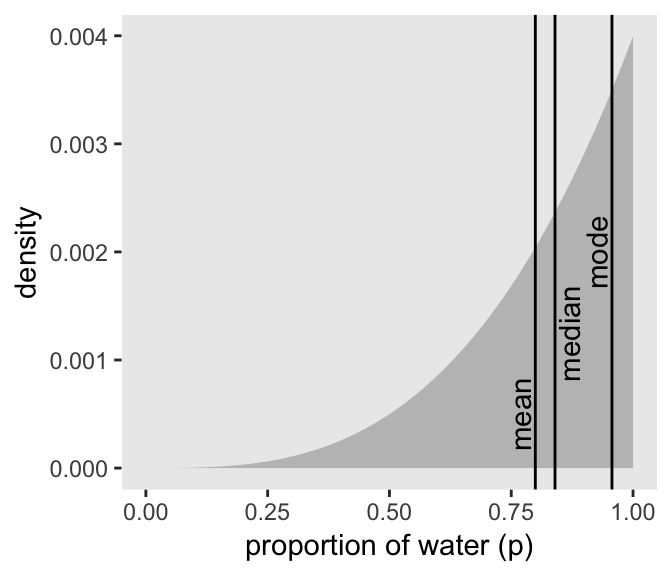
As it turns out “different loss functions imply different point estimates” (p. 59, emphasis in the original).
Let \(p\) be the proportion of the Earth covered by water and \(d\) be our guess. If McElreath pays us $100 if we guess exactly right but subtracts money from the prize proportional to how far off we are, then our loss is proportional to \(p - d\). If we decide \(d = .5\), then our expected loss will be:
d %>%
mutate(loss = posterior * abs(0.5 - p_grid)) %>%
summarise(`expected loss` = sum(loss))## # A tibble: 1 x 1
## `expected loss`
## <dbl>
## 1 0.313What McElreath did with sapply(), we’ll do with purrr::map(). If you haven’t used it, map() is part of a family of similarly-named functions (e.g., map2()) from the purrr package, which is itself part of the tidyverse. The map() family is the tidyverse alternative to the family of apply() functions from the base R framework. You can learn more about how to use the map() family here or here or here.
make_loss <- function(our_d){
d %>%
mutate(loss = posterior * abs(our_d - p_grid)) %>%
summarise(weighted_average_loss = sum(loss))
}
(
l <-
d %>%
select(p_grid) %>%
rename(decision = p_grid) %>%
mutate(weighted_average_loss = map(decision, make_loss)) %>%
unnest()
)## # A tibble: 1,000 x 2
## decision weighted_average_loss
## <dbl> <dbl>
## 1 0 0.800
## 2 0.00100 0.799
## 3 0.00200 0.798
## 4 0.00300 0.797
## 5 0.00400 0.796
## 6 0.00501 0.795
## 7 0.00601 0.794
## 8 0.00701 0.793
## 9 0.00801 0.792
## 10 0.00901 0.791
## # ... with 990 more rowsNow we’re ready for the right panel of Figure 3.4.
# this will help us find the x and y coordinates for the minimum value
min_loss <-
l %>%
filter(weighted_average_loss == min(weighted_average_loss)) %>%
as.numeric()
# the plot
l %>%
ggplot(aes(x = decision)) +
geom_ribbon(aes(ymin = 0, ymax = weighted_average_loss),
fill = "grey75") +
geom_vline(xintercept = min_loss[1], color = "white", linetype = 3) +
geom_hline(yintercept = min_loss[2], color = "white", linetype = 3) +
ylab("expected proportional loss") +
theme(panel.grid = element_blank())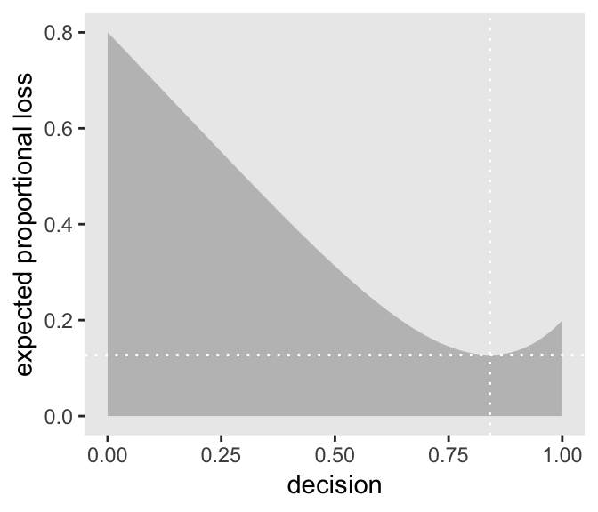
We saved the exact minimum value as min_loss[1], which is 0.8408408. Within sampling error, this is the posterior median as depicted by our samples.
samples %>%
summarise(posterior_median = median(samples))## # A tibble: 1 x 1
## posterior_median
## <dbl>
## 1 0.840The quadratic loss \((d - p)^2\) suggests we should use the mean instead. Let’s investigate.
# ammend our loss function
make_loss <- function(our_d){
d %>%
mutate(loss = posterior * (our_d - p_grid)^2) %>%
summarise(weighted_average_loss = sum(loss))
}
# remake our `l` data
l <-
d %>%
select(p_grid) %>%
rename(decision = p_grid) %>%
mutate(weighted_average_loss = map(decision, make_loss)) %>%
unnest()
# update to the new minimum loss coordinates
min_loss <-
l %>%
filter(weighted_average_loss == min(weighted_average_loss)) %>%
as.numeric()
# update the plot
l %>%
ggplot(aes(x = decision)) +
geom_ribbon(aes(ymin = 0, ymax = weighted_average_loss),
fill = "grey75") +
geom_vline(xintercept = min_loss[1], color = "white", linetype = 3) +
geom_hline(yintercept = min_loss[2], color = "white", linetype = 3) +
ylab("expected proportional loss") +
theme(panel.grid = element_blank())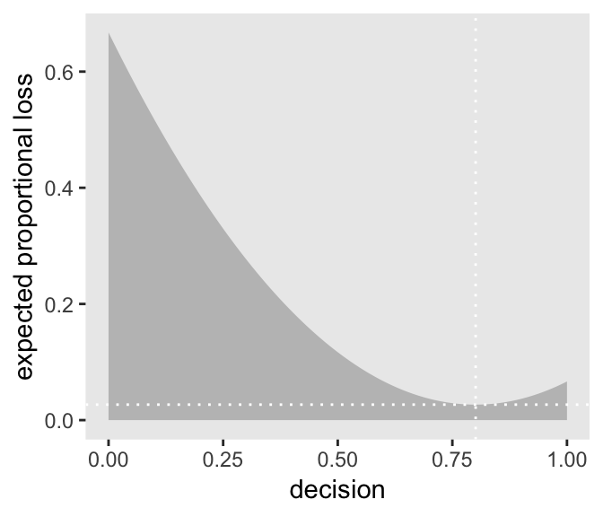
Based on quadratic loss \((d - p)^2\), the exact minimum value is 0.8008008. Within sampling error, this is the posterior mean of our samples.
samples %>%
summarise(posterior_meaan = mean(samples))## # A tibble: 1 x 1
## posterior_meaan
## <dbl>
## 1 0.7993.3 Sampling to simulate prediction
McElreath’s four good reasons for posterior simulation were:
- Model checking
- Software validation
- Research design
- Forecasting
3.3.1 Dummy data.
Dummy data for the globe tossing model arise from the binomial likelihood. If you let \(w\) be a count of water and \(n\) be the number of tosses, the binomial likelihood is
\[\text{Pr} (w|n, p) = \frac{n!}{w!(n - w)!} p^w (1 - p)^{n - w}\]
Letting \(n = 2\), \(p(w) = .7\), and \(w_{observed} = 0 \text{ through }2\), the denisties are:
tibble(n = 2,
probability = .7,
w = 0:2) %>%
mutate(density = dbinom(w, size = n, prob = probability))## # A tibble: 3 x 4
## n probability w density
## <dbl> <dbl> <int> <dbl>
## 1 2 0.7 0 0.09
## 2 2 0.7 1 0.42
## 3 2 0.7 2 0.490If we’re going to simulate, we should probably set our seed. Doing so makes the results reproducible.
set.seed(331)
rbinom(1, size = 2, prob = .7)## [1] 0Here are ten reproducible draws.
set.seed(331)
rbinom(10, size = 2, prob = .7)## [1] 0 0 1 1 2 2 1 2 1 2# how many would you like?
n_draws <- 1e5
set.seed(331)
d <- tibble(draws = rbinom(n_draws, size = 2, prob = .7))
d %>%
group_by(draws) %>%
count() %>%
mutate(proportion = n / nrow(d))## # A tibble: 3 x 3
## # Groups: draws [3]
## draws n proportion
## <int> <int> <dbl>
## 1 0 9059 0.0906
## 2 1 41949 0.419
## 3 2 48992 0.490Here’s the simulation updated so \(n = 9\).
set.seed(331)
d <- tibble(draws = rbinom(n_draws, size = 9, prob = .7))
# the histogram
d %>%
ggplot(aes(x = draws)) +
geom_histogram(binwidth = 1, center = 0,
color = "grey92", size = 1/10) +
scale_x_continuous("dummy water count",
breaks = seq(from = 0, to = 9, by = 2)) +
ylab("frequency") +
coord_cartesian(xlim = 0:9) +
theme(panel.grid = element_blank())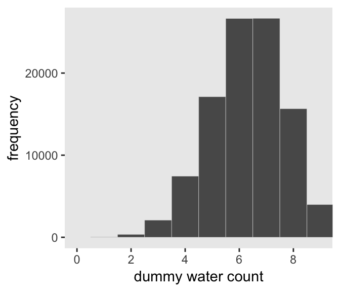
McElreath suggested we play around with different values of size and prob. With the next block of code, we’ll simulate nine conditions.
n_draws <- 1e5
simulate_binom <- function(n, probability){
set.seed(331)
rbinom(n_draws, size = n, prob = probability)
}
d <-
tibble(n = c(3, 6, 9)) %>%
expand(n, probability = c(.3, .6, .9)) %>%
mutate(draws = map2(n, probability, simulate_binom)) %>%
ungroup() %>%
mutate(n = str_c("n = ", n),
probability = str_c("p = ", probability)) %>%
unnest()
head(d)## # A tibble: 6 x 3
## n probability draws
## <chr> <chr> <int>
## 1 n = 3 p = 0.3 3
## 2 n = 3 p = 0.3 2
## 3 n = 3 p = 0.3 1
## 4 n = 3 p = 0.3 1
## 5 n = 3 p = 0.3 0
## 6 n = 3 p = 0.3 0The results look as follows:
d %>%
ggplot(aes(x = draws)) +
geom_histogram(binwidth = 1, center = 0,
color = "grey92", size = 1/10) +
scale_x_continuous("dummy water count",
breaks = seq(from = 0, to = 9, by = 2)) +
ylab("frequency") +
coord_cartesian(xlim = 0:9) +
theme(panel.grid = element_blank()) +
facet_grid(n ~ probability)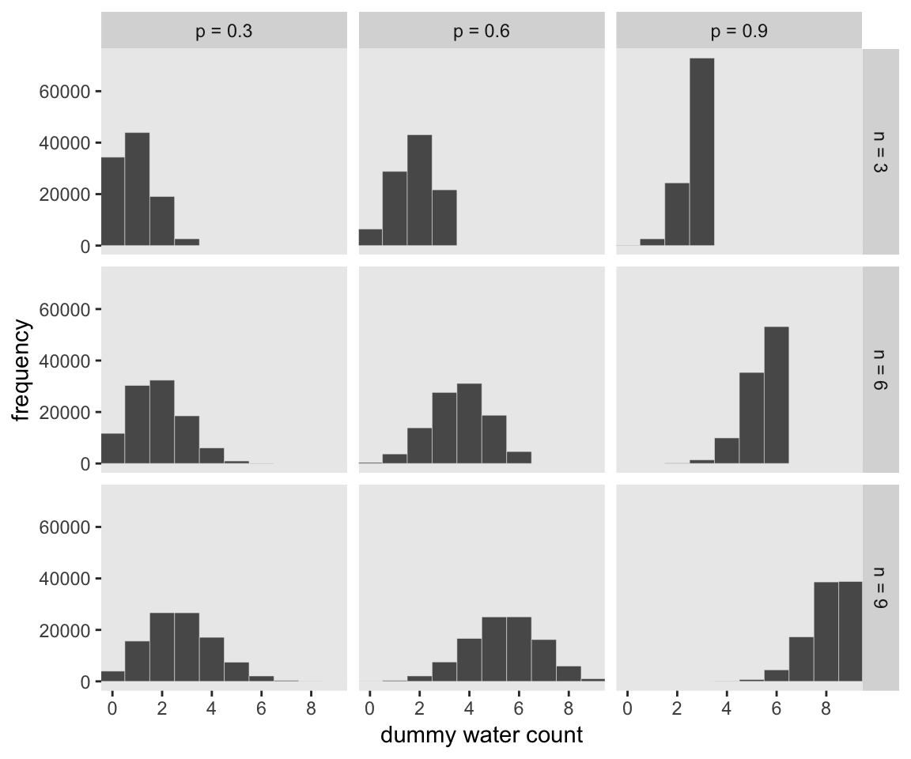
3.3.2 Model checking.
If you’re new to applied statistics, you might be surprised how often mistakes arise.
3.3.2.1 Did the software work?
Let this haunt your dreams: “There is no way to really be sure that software works correctly” (p. 64). You’re welcome.
3.3.2.2 Is the model adequate?
Let’s update our simulate_binom() golem to keep the number of trials constant at 9.
n_draws <- 1e4
n_trials <- 9
probability <- .6
set.seed(331)
tibble(draws = rbinom(n_draws, size = n_trials, prob = probability)) %>%
ggplot(aes(x = draws)) +
geom_histogram(binwidth = 1, center = 0,
color = "grey92", size = 1/10) +
scale_x_continuous("simulated water count",
breaks = seq(from = 0, to = 9, by = 3)) +
ylab("frequency") +
coord_cartesian(xlim = 0:9) +
theme(panel.grid = element_blank())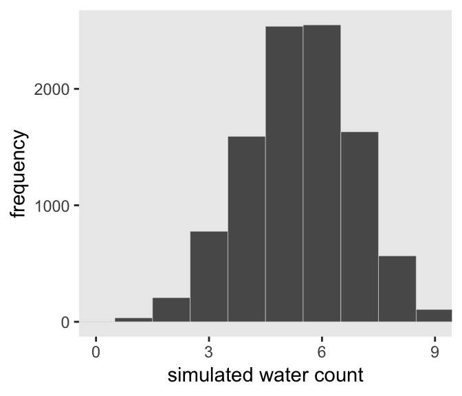
But notice that in this simulation we held \(p\) at a constant .6. There was no posterior uncertainty packed into the model. Let’s refresh ourselves on what the model was:
# how many grid points would you like?
n <- 1000
n_success <- 6
n_tirals <- 9
d <-
tibble(p_grid = seq(from = 0, to = 1, length.out = n),
prior = 1) %>%
mutate(likelihood = dbinom(n_success, size = n_tirals, prob = p_grid)) %>%
mutate(posterior = likelihood * prior) %>%
mutate(posterior = posterior / sum(posterior))
# samples!
set.seed(33.22)
samples <-
tibble(samples = sample(d$p_grid, prob = d$posterior, size = 1e4, replace = T))
head(samples)## # A tibble: 6 x 1
## samples
## <dbl>
## 1 0.445
## 2 0.394
## 3 0.458
## 4 0.630
## 5 0.585
## 6 0.518Let’s use it to simulate and make the middle panels of Figure 3.6.
# the simulation
set.seed(3322)
samples <-
samples %>%
mutate(w = rbinom(n_draws, size = n_trials, prob = samples),
key = str_c("p = ", round(samples, digits = 1)))
# the plot
samples %>%
filter(key != "p = 1") %>%
ggplot(aes(x = w)) +
geom_histogram(binwidth = 1, center = 0,
color = "grey92", size = 1/10) +
scale_x_continuous("dummy water count",
breaks = seq(from = 0, to = 9, by = 3)) +
scale_y_continuous(NULL, breaks = NULL) +
coord_cartesian(xlim = 0:9) +
theme(panel.grid = element_blank()) +
facet_wrap(~ key, ncol = 9, scales = "free_y") 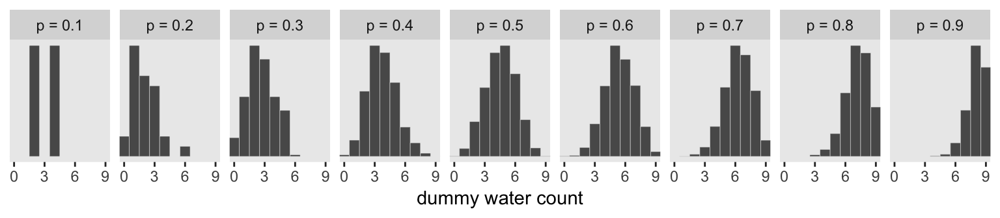
The top panel of Figure 3.6 is just the density of samples.
samples %>%
ggplot(aes(x = samples)) +
geom_density(fill = "grey50", color = "transparent") +
scale_x_continuous("probability of water",
breaks = c(0, .5, 1)) +
scale_y_continuous(NULL, breaks = NULL) +
labs(title = "Posterior probability") +
theme(panel.grid = element_blank())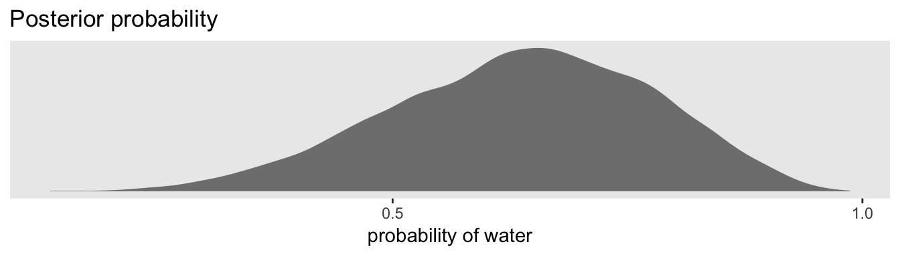
And the bottom panel is the histogram of w without faceting by levels of samples.
samples %>%
ggplot(aes(x = w)) +
geom_histogram(binwidth = 1, center = 0,
color = "grey92", size = 1/10) +
scale_x_continuous("number of water samples",
breaks = seq(from = 0, to = 9, by = 3)) +
scale_y_continuous(NULL, breaks = NULL) +
ggtitle("Posterior predictive distribution") +
coord_cartesian(xlim = 0:9) +
theme(panel.grid = element_blank())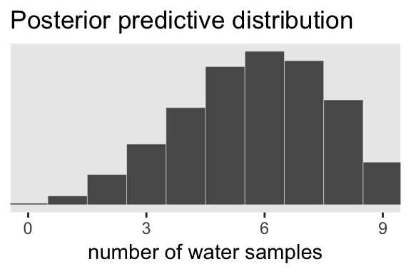
In Figure 3.7, McElreath considered the longst sequence of the sampe values. We’ve been using rbinom() with the size parameter set to 9 for our simulations. E.g.,
rbinom(10, size = 9, prob = .6)## [1] 4 3 6 4 3 3 4 5 4 6Notice this collapses (i.e., aggregated) over the sequences within the individual sets of 9. What we need is to simulate nine individual trials many times over. For example, this
rbinom(9, size = 1, prob = .6)## [1] 1 0 1 1 0 1 1 0 0would be the disaggregated version of just one of the numerals returned by rbinom() when size = 9. So let’s try simulating again with unaggregated samples.
simulate_disaggregated_binom <- function(samples){
set.seed(37)
rbinom(9, size = 1, prob = samples)
}
(
disaggregated_samples <-
samples %>%
select(samples) %>%
mutate(iteration = 1:n(),
draws = map(samples, simulate_disaggregated_binom)) %>%
unnest()
)## # A tibble: 90,000 x 3
## samples iteration draws
## <dbl> <int> <int>
## 1 0.445 1 0
## 2 0.445 1 0
## 3 0.445 1 1
## 4 0.445 1 0
## 5 0.445 1 1
## 6 0.445 1 1
## 7 0.445 1 0
## 8 0.445 1 0
## 9 0.445 1 0
## 10 0.394 2 0
## # ... with 89,990 more rowsNow we have to count the longest sequences. The base R rle() function will help with that. Consider McElreath’s sequence of tosses.
tosses <- c("w", "l", "w", "w", "w", "l", "w", "l", "w")You can plug that into rle().
rle(tosses)## Run Length Encoding
## lengths: int [1:7] 1 1 3 1 1 1 1
## values : chr [1:7] "w" "l" "w" "l" "w" "l" "w"For our purposes, we’re interested in lengths. That tells us the length of each sequences of the same value. The 3 corresponds to our run of three ws. The max() function will help us confirm it’s the largest value.
rle(tosses)$lengths %>% max()## [1] 3Now let’s apply our method to the data and plot.
disaggregated_samples %>%
group_by(iteration) %>%
summarise(longest_run_length = rle(draws)$lengths %>% max()) %>%
ggplot(aes(x = longest_run_length)) +
geom_histogram(aes(fill = longest_run_length == 3),
binwidth = 1, center = 0,
color = "grey92", size = 1/10) +
scale_x_continuous("longest run length",
breaks = seq(from = 0, to = 9, by = 3)) +
scale_fill_viridis_d(option = "D", end = .9) +
ylab("frequency") +
coord_cartesian(xlim = 0:9) +
theme(panel.grid = element_blank(),
legend.position = "none")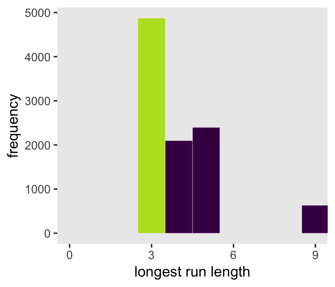
Let’s look at rle() again.
rle(tosses)## Run Length Encoding
## lengths: int [1:7] 1 1 3 1 1 1 1
## values : chr [1:7] "w" "l" "w" "l" "w" "l" "w"We can use the length of the output (i.e., 7 in this example) as the numbers of switches from, in this case, “w” and “l”.
rle(tosses)$lengths %>% length()## [1] 7We’re ready to make the right panel of Figure 3.7.
disaggregated_samples %>%
group_by(iteration) %>%
summarise(longest_run_length = rle(draws)$lengths %>% length()) %>%
ggplot(aes(x = longest_run_length)) +
geom_histogram(aes(fill = longest_run_length == 6),
binwidth = 1, center = 0,
color = "grey92", size = 1/10) +
scale_x_continuous("number of switches",
breaks = seq(from = 0, to = 9, by = 3)) +
scale_fill_viridis_d(option = "D", end = .9) +
ylab("frequency") +
coord_cartesian(xlim = 0:9) +
theme(panel.grid = element_blank(),
legend.position = "none")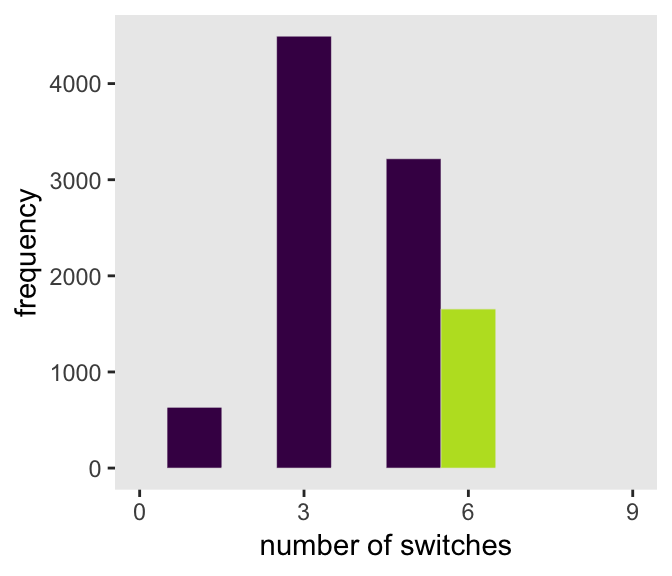
3.4 Summary Let’s practice in brms
Open brms.
library(brms)In brms, we’ll fit the primary model of \(w = 6\) and \(n = 9\) much like we did at the end of the project for Chapter 2.
fit1 <-
brm(data = list(w = 6),
family = binomial(link = "identity"),
w | trials(9) ~ 1,
prior = prior(normal(.5, 1), class = Intercept),
control = list(adapt_delta = 0.99))Here’s the posterior summary for b_Intercept, the probability of a “w”.
posterior_summary(fit1)["b_Intercept", ] %>%
round(digits = 2)## Estimate Est.Error Q2.5 Q97.5
## 0.63 0.13 0.36 0.86As we’ll fully cover in the next chapter, Estimate is the posterior mean, the two Q columns are the quantile-based 95% intervals, and Est.Error is the posterior standard deviation.
Much like the way we used the samples() function to simulate probability values, above, we can do so with fitted() within the brms framework. But we will have to specify scale = "linear" in order to return results in the probability metric. By default, brms::fitted() will return summary information. Since we want actual simulation draws, we’ll specify summary = F.
fitted_samples <-
fitted(fit1, summary = F,
scale = "linear") %>%
as_tibble()
glimpse(fitted_samples)## Observations: 4,000
## Variables: 1
## $ V1 <dbl> 0.7305322, 0.6196294, 0.7127753, 0.7243749, 0.7148332, 0.8439780, 0.8556482, 0.84666...By default, we have a generically-named vector V1 of 4000 samples. We’ll explain the defaults in later chapters. For now, notice we can view these in a density.
fitted_samples %>%
ggplot(aes(x = V1)) +
geom_density(fill = "grey50", color = "transparent") +
scale_x_continuous("probability of water",
breaks = c(0, .5, 1)) +
scale_y_continuous(NULL, breaks = NULL) +
labs(title = "Posterior probability") +
theme(panel.grid = element_blank())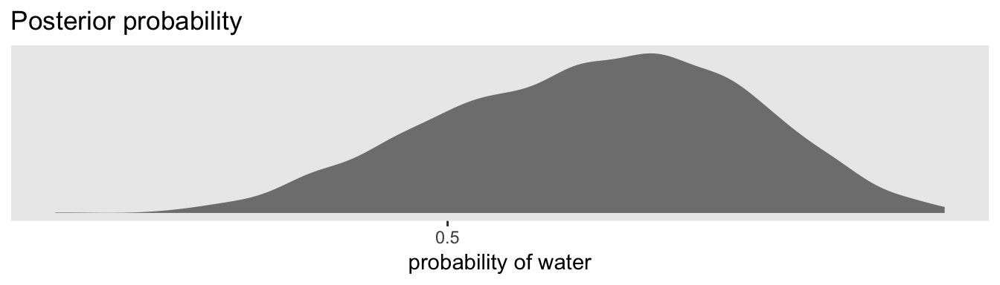
Looks a lot like the posterior probability density at the top of Figure 3.6, doesn’t it? Much like we did with samples, we can use this distribution of probabilities to predict histograms of “w” counts.
# the simulation
set.seed(33.22)
fitted_samples <-
fitted_samples %>%
mutate(w = rbinom(n(), size = n_trials, prob = V1)) %>%
mutate(key = str_c("p = ", round(V1, digits = 1)))
# the plot
fitted_samples %>%
filter(key != "p = 1") %>%
ggplot(aes(x = w)) +
geom_histogram(binwidth = 1, center = 0,
color = "grey92", size = 1/10) +
scale_x_continuous("dummy water count",
breaks = seq(from = 0, to = 9, by = 3)) +
scale_y_continuous(NULL, breaks = NULL) +
coord_cartesian(xlim = 0:9) +
theme(panel.grid = element_blank()) +
facet_wrap(~ key, ncol = 9, scales = "free_y") 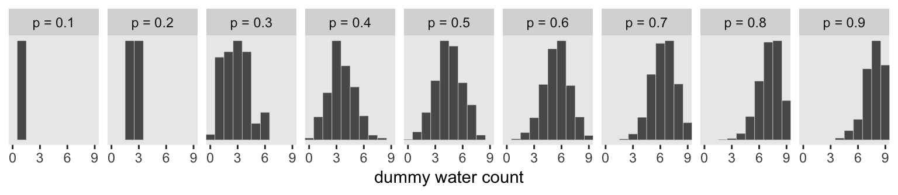
And also like with samples, we can omit the facet_wrap() function to make histogram in the bottom panel of Figure 3.6.
fitted_samples %>%
ggplot(aes(x = w)) +
geom_histogram(binwidth = 1, center = 0,
color = "grey92", size = 1/10) +
scale_x_continuous("number of water samples",
breaks = seq(from = 0, to = 9, by = 3)) +
scale_y_continuous(NULL, breaks = NULL) +
ggtitle("Posterior predictive distribution") +
coord_cartesian(xlim = 0:9) +
theme(panel.grid = element_blank())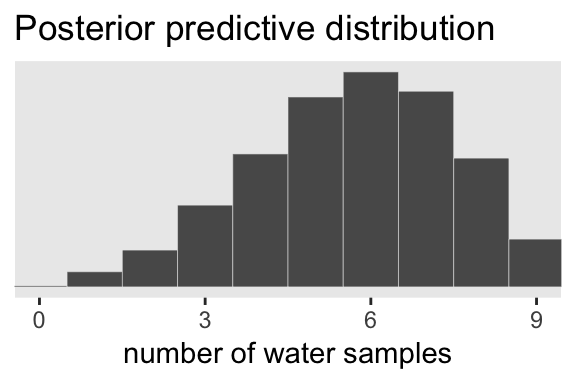
As you might imagine, we can use the output from fitted() to return disaggregated batches of 0s and 1s, too. And we could even use those disaggregated 0s and 1s to examine longest run lengths and numbers of switches as in the analyses for Figure 3.7. I’ll leave those as exercises for the interested reader.
Session info
sessionInfo()## R version 3.5.1 (2018-07-02)
## Platform: x86_64-apple-darwin15.6.0 (64-bit)
## Running under: macOS High Sierra 10.13.6
##
## Matrix products: default
## BLAS: /Library/Frameworks/R.framework/Versions/3.5/Resources/lib/libRblas.0.dylib
## LAPACK: /Library/Frameworks/R.framework/Versions/3.5/Resources/lib/libRlapack.dylib
##
## locale:
## [1] en_US.UTF-8/en_US.UTF-8/en_US.UTF-8/C/en_US.UTF-8/en_US.UTF-8
##
## attached base packages:
## [1] stats graphics grDevices utils datasets methods base
##
## other attached packages:
## [1] brms_2.4.0 Rcpp_0.12.18 tidybayes_1.0.1 bindrcpp_0.2.2 forcats_0.3.0 stringr_1.3.1
## [7] dplyr_0.7.6 purrr_0.2.5 readr_1.1.1 tidyr_0.8.1 tibble_1.4.2 ggplot2_3.0.0
## [13] tidyverse_1.2.1
##
## loaded via a namespace (and not attached):
## [1] colorspace_1.3-2 ggridges_0.5.0 rsconnect_0.8.8
## [4] rprojroot_1.3-2 ggstance_0.3 markdown_0.8
## [7] base64enc_0.1-3 rethinking_1.59 rstudioapi_0.7
## [10] rstan_2.17.3 svUnit_0.7-12 DT_0.4
## [13] mvtnorm_1.0-8 lubridate_1.7.4 xml2_1.2.0
## [16] codetools_0.2-15 bridgesampling_0.4-0 mnormt_1.5-5
## [19] knitr_1.20 shinythemes_1.1.1 bayesplot_1.6.0
## [22] jsonlite_1.5 LaplacesDemon_16.1.1 broom_0.4.5
## [25] shiny_1.1.0 compiler_3.5.1 httr_1.3.1
## [28] backports_1.1.2 assertthat_0.2.0 Matrix_1.2-14
## [31] lazyeval_0.2.1 cli_1.0.0 later_0.7.3
## [34] htmltools_0.3.6 tools_3.5.1 igraph_1.2.1
## [37] coda_0.19-1 gtable_0.2.0 glue_1.2.0
## [40] reshape2_1.4.3 cellranger_1.1.0 nlme_3.1-137
## [43] crosstalk_1.0.0 psych_1.8.4 xfun_0.3
## [46] rvest_0.3.2 mime_0.5 miniUI_0.1.1.1
## [49] gtools_3.8.1 MASS_7.3-50 zoo_1.8-2
## [52] scales_0.5.0 colourpicker_1.0 hms_0.4.2
## [55] promises_1.0.1 Brobdingnag_1.2-5 parallel_3.5.1
## [58] inline_0.3.15 shinystan_2.5.0 yaml_2.1.19
## [61] gridExtra_2.3 loo_2.0.0 StanHeaders_2.17.2
## [64] stringi_1.2.3 dygraphs_1.1.1.5 rlang_0.2.1
## [67] pkgconfig_2.0.1 matrixStats_0.54.0 HDInterval_0.2.0
## [70] evaluate_0.10.1 lattice_0.20-35 bindr_0.1.1
## [73] rstantools_1.5.0 htmlwidgets_1.2 labeling_0.3
## [76] tidyselect_0.2.4 plyr_1.8.4 magrittr_1.5
## [79] bookdown_0.7 R6_2.2.2 pillar_1.2.3
## [82] haven_1.1.2 foreign_0.8-70 withr_2.1.2
## [85] xts_0.10-2 abind_1.4-5 modelr_0.1.2
## [88] crayon_1.3.4 arrayhelpers_1.0-20160527 utf8_1.1.4
## [91] rmarkdown_1.10 grid_3.5.1 readxl_1.1.0
## [94] threejs_0.3.1 digest_0.6.15 xtable_1.8-2
## [97] httpuv_1.4.4.2 stats4_3.5.1 munsell_0.5.0
## [100] viridisLite_0.3.0 shinyjs_1.0